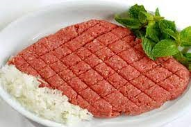
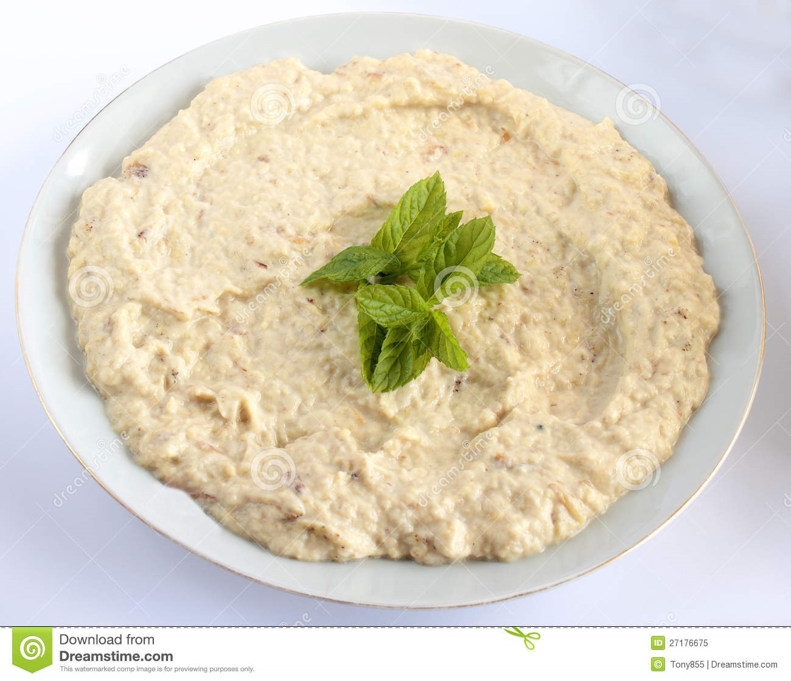

Lebanese Mezza
The Lebanese Mezza is a selection of small dishes that are served as appetizers in the Middle East, North Africa, and Greece. Often the mezza is served as a part of multi-course meals, but it can also act as a series of snacks during a social engagement.
- THE PERFECT KIBBEH
- Making great kibbeh is an art form, and can take a lot of practise to get just right. You have to make sure the kibbeh is crunchy but not too dry. The casing has to be thin but still substantial enough to balance the filling. The filling should complement the casing without overwhelming it. When you bite a kibbeh it should be savoury and moderately spiced, never too spicy or bland.

- Kibbeh Nayeh
- Raw kibbeh nayeh (Lebanese raw meat kibbeh) is an iconic dish cherished by millions of Lebanese people. I remember how my grandma would have it on the table during Sunday family lunches. It was always the star dish that everyone couldn't wait to have with a drizzle of olive oil and crunchy white onions. If you'd like a vegan equivalent of kibbeh nayeh, check out this potato kibbeh (kibbet batata)..Raw kibbeh nayeh (Lebanese raw meat kibbeh) is an iconic dish cherished by millions of Lebanese people. I remember how my grandma would have it on the table during Sunday family lunches. It was always the star dish that everyone couldn't wait to have with a drizzle of olive oil and crunchy white onions. If you'd like a vegan equivalent of kibbeh nayeh, check out this potato kibbeh (kibbet batata)..

- Baba Ghanouge
- Baba ghanouj or ghanoush, or moutabal are just some of the many names this dip is known by. I will not get too deep into the debate but in Lebanon, this dip is almost always known as moutabal. Traditionally, “baba ghanouj” is a Levantine eggplant dish similar to moutabal but, with no tahini. However, globally, baba ghanouj has taken over the name of moutabal for this smokey eggplant dish
- Sambousik
- Beef Sambousek is a crispy meat pie, typically served as a mezze or appetizer. These delicious pies are loaded with spiced ground beef, onions, pine nuts and fried to golden perfection.Sambousek is a Lebanese delicacy enjoyed most often as an appetizer or “mezze.” There are many different varieties of these crispy pies including a savory cheese one, and this beef one which can also be made with ground lamb. Sambousek is very similar to fatayer, except the dough is a little different as it is not baked, but rather fried. Also, unlike Lahme bi Ajeen, the open-faced meat pies, the beef in sambousek is precooked before being rolled up.
- Tabouleh
- You say tabouli salad, I say tabbouleh salad. Who actually knows the real way to spell it in English haha! But anyone who’s tried Tabbouleh Salad knows what a fresh, delightful and tasty salad it is! Along with fattoush salad, it’s the top salad served in Lebanon, where my parents are from. So, as you can imagine, I’ve grown up eating a lot of tabbouleh in my life. And I’ve grown to learn how to make the best tabbouleh recipe!
ABOUT MEZZA
In Lebanon and Cyprus, meze is often a meal in its own right. There are vegetarian, meat or fish mezes. Groups of dishes arrive at the table about 4 or 5 at a time (usually between five and ten groups). There is a set pattern to the dishes: typically olives, tahini, salad and yogurt will be followed by dishes with vegetables and eggs, then small meat or fish dishes alongside special accompaniments, and finally more substantial dishes such as whole fish or meat stews and grills. Establishments will offer their own specialities, but the pattern remains the same. Naturally the dishes served will reflect the seasons. For example, in late autumn, snails will be prominent. As so much food is offered, it is not expected that every dish be finished, but rather shared at will and served at ease. Eating meze is a social event.